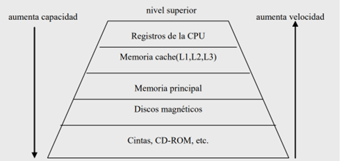
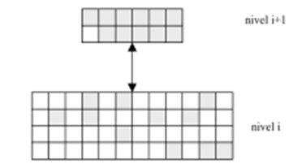

En el nivel i+1 se ubica una copia de aquellos bloques del nivel i
que tienen mayor probabilidad
de ser referenciados en el futuro inmediato

Este mecanismo de migración entre niveles es efectivo gracias al
principio de localidad
referencial que manifiestan los programas:
Se consigue que el mayor número de referencias generado por los programas
correspondan a
informaciones ubicadas en los niveles más altos de la jerarquía.
Organización interna de la memoria principal.
Una memoria principal se compone de un conjunto de celdas básicas dotadas de una
determinada organización. Cada celda soporta un bit de información. Los bits
se agrupan en unidades
direccionables denominadas palabras. La longitud de palabra la determina el número de
bits que la
componen y constituye la resolución de la memoria (mínima cantidad de
información direccionable).
La longitud de palabra suele oscilar desde 8 bits (byte) hasta 64 bits.
Cada celda básica es un dispositivo físico con dos estados estables
(o semi-estables) con
capacidad para cambiar el estado (escritura) y determinar su valor (lectura). Aunque
en los primeros
computadores se utilizaron los materiales magnéticos como soporte de las celdas
de memoria principal
(memorias de ferritas, de película delgada, etc.) en la actualidad sólo se
utilizan los materiales
semiconductores.
Dentro de las memorias electrónicas de semiconductor podemos
distinguir dos grandes grupos:
las estáticas (SRAM: Static Random Access Memory) y las dinámicas
(DRAM: Dynamic Random
Access Memory). Las estáticas utilizan el principio de biestabilidad que
se consigue con dos puertas
inversoras (NAND ó NOR) realimentadas, mientras que las dinámicas
aprovechan la carga o ausencia
de carga de un pequeño condensador creado en un material semiconductor. Debido
a la descarga
natural que sufren las celdas cargadas, las memorias dinámicas necesitan
un sistema de refresco que
periódicamente - y antes que la carga eléctrica del condensador se
haga indetectable - recargue las
celdas que se encuentran en estado de carga.
Desde un punto de vista conceptual y con independencia de la tecnología,
consideraremos la
celda básica de memoria como un bloque con tres líneas de entrada
(entrada dato, selección y
lectura/escritura) y una de salida (salida dato). La celda sólo opera
(lectura ó escritura) cuando la
selección está activa.